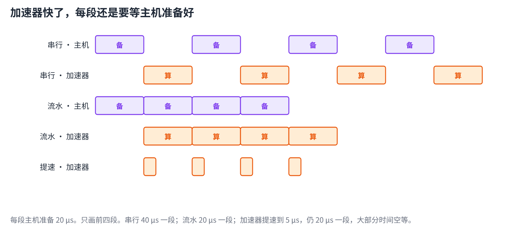
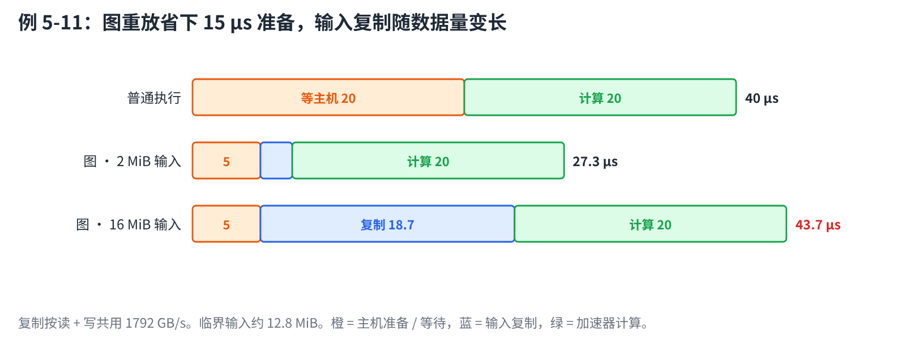
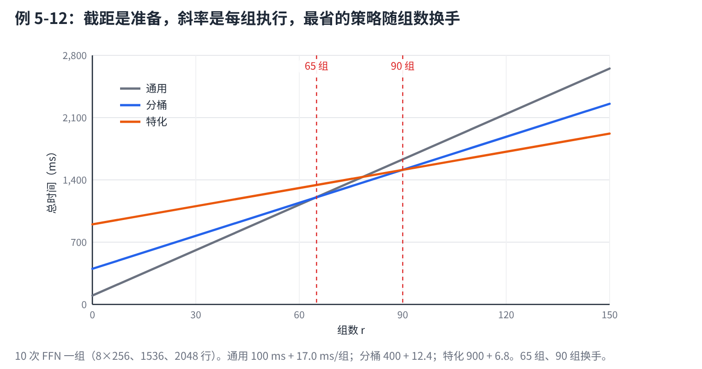
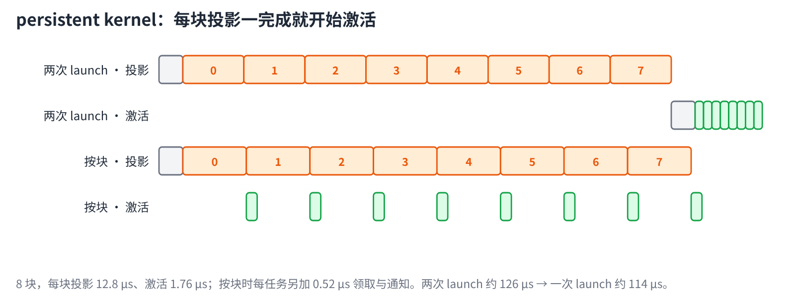
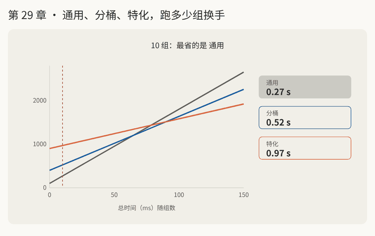

第 29 章 · 运行时：重叠、CUDA Graph、动态形状与 persistent kernel
本地运行
git clone https://github.com/wikieden/ai-infra-from-constraints
cd ai-infra-from-constraints/code/notebooks
pip install jupyterlab torch numpy
jupyter lab ch29_runtime.ipynb也可以下载后直接用 VS Code 打开 .ipynb 运行。需要 GPU 的章节在 Colab 里选「代码执行程序 → 更改运行时类型 → GPU」。
本章回答：GPU 算快了四倍，为什么整体几乎没变？CUDA Graph 省的是什么，什么时候反而更慢？输入长度一直在变，是每个形状编一份、补齐到几个桶，还是用一份通用程序？两个相邻 kernel 能不能不等前一个全部算完？
讲解日期：2026-11-24 · 上一章：第 28 章 编译器：表达、变换与选择 · 下一章：第 30 章 从局部优化到完整请求
对应原文：materials/ai-infra-book/manuscripts/05-算子与运行时.md§5.5 L768–L905（例 5-10 到 5-12，图 5-26 到 5-37）
本章缩写：GIL = Global Interpreter Lock（全局 / 解释器 / 锁，Python）· MPK = Mirage Persistent Kernel（Mirage 持久 kernel，研究系统）· PDL = Programmatic Dependent Launch（程序化 / 依赖 / 启动）。全部缩写见 缩写与术语表
编译器选好了加速器程序，运行时还要每一步准备输入、挑程序、提交、管缓冲。同一份 kernel，提交方式和复用方式不同，总时间就不同。本章接着第 25 章的时间线看主机这一侧。
讲解
第一步：GPU 快了，主机就成了瓶颈（2026-11-24）
类比：一个厨师配一个传菜员。 传菜员 20 秒送一道单，厨师 20 秒炒一道；厨师练到 5 秒一道，菜还是 20 秒出一道，因为单子来得慢。
例 5-10（原文 L776–L778）：100 段工作，主机准备和加速器计算各 20 μs，准备下一段的数据都已知、资源独立：
| 主机准备 | 加速器计算 | 串行 | 流水 |
|---|---|---|---|
| 20 μs | 20 μs | 4000 μs | 2020 μs |
| 20 μs | 5 μs | 2500 μs | 2005 μs（只少 15 μs） |
| 5 μs | 5 μs | 1000 μs | 505 μs |

图 29-1 · 只画前四段。加速器越快，等下一项任务的时间越长。
两个方向：少准备（复用已确定的形状和执行计划）、早准备（在上一段执行期间准备下一段，如异步处理上一轮输出）。自回归生成里，下一步要等上一步选出的 token；组 batch、更新语法状态、判断是否停止，各自依赖不同结果，不依赖的那部分可以提前。
vLLM v0.6.0 的例子（原文 L792）：发布前剖析，单张 H100 跑 Llama 3 8B，一步里 API 服务器占 33%、调度占 29%，加速器执行只占 38%（API 服务器和引擎在同一 Python 进程里争 GIL）。v0.6.0 把 API 服务器挪到独立进程、引入多步调度、输出处理异步化，8B 吞吐到 v0.5.3 的 2.7 倍、70B 1.8 倍。没改一个 kernel，没换硬件。
一句话：流水的节拍由慢的一侧决定；加速器快过主机以后，再优化 kernel 几乎没用，要减主机准备或把它藏到执行期间。
第二步：CUDA Graph：省提交，但要付输入复制（2026-11-24）
类比：外卖的固定套餐。 第一次把一整套点单记下来（capture），以后一键重下（replay），不用每道菜重新填单。但套餐的配送地址是固定的，你搬了家，就得先把东西搬回原地址。
省的是什么（原文 L798–L820）：图重放时主机只发一次 graph launch，加速器仍执行图里的每个 kernel。3 次 FFN：
| 方式 | 主机 launch | 加速器 kernel |
|---|---|---|
| 普通提交 | 18 次 kernel launch | 18 |
| 图重放 | 3 次 graph launch | 18 |
| 融合激活链 | 15 次 | 15 |
| 融合 + 图重放 | 3 次 | 15 |
融合减少加速器 kernel 数，图重放减少主机提交次数，两件事。
例 5-11：输入复制何时抵消收益（原文 L828–L844）：普通执行 = 主机等待 20 + 计算 20 = 40 μs；图重放准备 5 μs，原本能省 15 μs。但图按记录的固定地址读输入，新输入不在那儿就要先复制（读 + 写，按 1792 GB/s）：
| 输入 | 复制 | 图执行总时间 |
|---|---|---|
| \([256, 4096]\) BF16，2 MiB | 2.3 μs | 27.3 μs（省 12.7） |
| \([2048, 4096]\)，16 MiB | 18.7 μs | 43.7 μs（比普通还慢） |

图 29-2 · 让上游直接写进图的固定缓冲，或从输入较小的位置开始捕获，都能免掉这次复制。
计划也能复用（原文 L846）：FlashInfer 把 plan（按本步各请求长度和 KV 位置选 kernel、分任务、排工作区，并把元数据复制到 GPU）和 run 分开。同一步 36 层长度相同，共用一份 plan：36 层注意力从约 2.0 / 2.4 ms 降到 0.72 / 0.75 ms，H2D 从 144 次降到 4 次，kernel 数不变。长度变了必须重新 plan，否则按旧长度算，结果错。
场景代码：PyTorch 捕获和重放一张图；新输入要 copy_ 进捕获时的静态张量（真实 API）：
import torch
static_x = torch.randn(256, 4096, device="cuda", dtype=torch.bfloat16)
w = torch.randn(4096, 4096, device="cuda", dtype=torch.bfloat16)
torch.matmul(static_x, w) # 预热
g = torch.cuda.CUDAGraph()
with torch.cuda.graph(g):
static_y = static_x @ w # 记录：地址固定
new_x = torch.randn_like(static_x)
static_x.copy_(new_x) # 例 5-11 里那次复制
g.replay() # 一次提交，跑完整张图
补基础：stream、graph、PDL 见《CUDA 从线程到 Tensor Core》第 26 章；PyTorch 的 CUDA Graph 见《PyTorch 从里到外》第 28 章。
一句话：图重放省的是一段固定的主机提交时间，输入复制随数据量增长；12.8 MiB 以上（RTX PRO 6000）复制就吃掉了收益。
第三步：动态形状：通用、分桶还是特化（2026-11-24）
类比：做衣服。 均码（通用）谁都能穿但不合身；S / M / L 三档（分桶）要多做几种版型、有人穿得宽松；量体裁衣（特化）每件都合身，但每来一个新身材就要打一次版。
例 5-12（原文 L852–L874）：10 次 FFN 一组：8 次 256 行、1 次 1536 行、1 次 2048 行，共 5632 行；分成 512、2048 两个桶，实际执行 8192 行，多算 45%。每行 \(6HF\) FLOPs，在 RTX PRO 6000 上：
| 策略 | 有效处理率 | 一次性准备 \(P\) | 每组执行 \(T\) |
|---|---|---|---|
| 通用（5632 行） | 100 TFLOP/s（MFU 20%） | 100 ms | 17.0 ms |
| 分桶（8192 行） | 200 TFLOP/s（40%） | 400 ms | 12.4 ms |
| 逐形状特化（5632 行） | 250 TFLOP/s（50%） | 900 ms | 6.8 ms |

图 29-3 · 1–64 组通用最省，65–89 组分桶最省，90 组起特化最省。
- 跑 70 组：1.29 / 1.27 / 1.38 s，分桶最短；特化每组更快，但省下的还没抵掉多出的准备。
- 程序已经缓存时准备成本是 0，特化从第一组起最快：选择同时依赖形状频数和缓存状态。
- 自动调优也一样（原文 L876）：搜索 10 分钟、每次省 5 μs，要 \(600 / (5 \times 10^{-6}) = 1.2 \times 10^8\) 次调用才回本：每秒 1 万次约 3.3 小时，每秒 100 次约 14 天。
场景代码：torch.compile 的 dynamic=True 走通用路径，mark_dynamic 指定哪一维会变；不标的话每个新形状可能重编一次（真实 API）：
import torch
ffn = torch.compile(model.mlp, dynamic=False) # 每个新长度触发一次重编（特化）
x = torch.randn(256, 4096, device="cuda")
torch._dynamo.mark_dynamic(x, 0) # 第 0 维会变：编一份通用的
y = torch.compile(model.mlp)(x)
一句话：总时间 = 准备 + 组数 × 每组；执行越快的方案准备越贵，哪个最省取决于会跑多少组、程序是否已缓存。
第四步：persistent kernel：按块交接，不等整个 kernel（2026-11-24）
类比：流水线上的零件按个传递。 不必等前一道工序把一整箱都做完才开下一道；做好一个就递一个。但每递一次要签收（领任务、发完成标志），这也花时间。
原文 L882–L904：persistent kernel 一直驻留在加速器上，从队列领任务，按完成标志判断依赖是否就绪。up 投影接 SiLU，512 个 token 分 8 块（每块 64 行），RTX PRO 6000：
- 每块投影 \(2 \times 64 \times 4096 \times 12288 \approx 6.44\) GFLOPs ÷ 503.8 TFLOP/s ≈ 12.8 μs；每块激活读写 \(64 \times 12288 \times 4\) B ÷ 1792 GB/s ≈ 1.76 μs。
- 两次 launch、整段等待：\(2 \times 5 + 8 \times (12.8 + 1.76) \approx 126\) μs。
- 一次 launch、按块：领任务（一次原子加，约 0.15 μs）+ 发完成标志（跨 SM 交接，约 0.37 μs）= 每任务 0.52 μs；\(5 + 8 \times 13.3 + 2.28 \approx 114\) μs，约 1.1 倍。

图 29-4 · 省下约 12.6 μs = 少一次 5 μs launch + 7 块激活藏进投影，再减去关键路径上 4.7 μs 的任务开销。两段越接近，按块重叠省得越多。
kernel 边界在加速器一侧有多贵（原文 L902–L904）：CUDA Graph 里两个空 kernel 的间隔约 430 ns，PDL 约 370 ns，和第 21 章的一对一跨 SM 交接相当。decode 时 batch 1，每个矩阵—向量乘都铺满所有 SM，每个边界都是一次全 SM 交接：64 个 \(4096 \times 4096\) 投影串成依赖链，每个边界多 1.2–2.3 μs，主要是在等最慢的 SM；改成各 SM 从计数器领下一批行（快的多做），降到 0.74–1.06 μs，接近全 SM 汇合约 1 μs 的下限。这部分是依赖本身的代价，换提交方式消不掉。
一句话：persistent kernel 省 launch、让相邻算子按块重叠，节拍仍由慢的阶段决定；跨 SM 的依赖往返省不掉。
动画演示：通用、分桶、特化，跑多少组换手

可交互版：animations/29-runtime.html（滑块：组数 1–150；开关：程序已缓存）。
怎么看：
- 三条线是三种策略的总时间 \(P + rT\)：截距是准备，斜率是每组执行（第三步）；
- 竖线是当前组数，右边列出三种策略的总时间，最省的高亮；
- 播放时组数 10 → 65 → 70 → 90 → 150，看最省的策略从通用换到分桶、再换到特化；
- 打开"已缓存"，准备都变成 0，特化从第一组起最省。
练习与作答记录
题 1（第一步）：200 段，主机准备 12 μs、加速器 8 μs。串行和流水各多久？加速器再快一倍呢？主机快一倍呢？
作答记录：（待作答）
题 2（第二步）：普通执行 = 主机等待 30 + 计算 25 μs；图重放准备 6 μs。复制带宽 1008 GB/s（RTX 4090），输入多大时图重放不再省时间？
作答记录：（待作答）
题 3（第三步）：三种策略：准备 50 / 300 / 1000 ms，每组 20 / 15 / 8 ms。各在多少组范围内最省？
作答记录：（待作答）
原书实验 5-7、5-8（L1013、L1017：小形状次数改成 4、RTX 4090 上的图复制临界值）。想多练可以做。
口诀
厨师快了单子没快，菜还是按单子的节奏出；
套餐一键重下，搬了家得先把东西搬回原址；
均码、三档、量体裁衣：做得多就裁，做得少就穿均码；
做好一个递一个，签收也要时间，跨 SM 那一下省不掉。
本章复习卡片
I112（例 5-10 主机流水与 vLLM v0.6.0）、I113（CUDA Graph 省提交 vs 融合省 kernel；12.8 MiB 临界）、I114（例 5-12 通用 / 分桶 / 特化与 \(P + rT\)）、I115（persistent kernel 126 → 114 μs 与依赖本身的代价）。练习做完后，按答错、卡住的地方再补。
附录 · 延伸阅读
留给以后深入学习用，不影响本章主线。★ 是建议先读的。
推荐阅读
| 读什么 | 读哪里 | 读它为了什么 |
|---|---|---|
| ★ AII 第 5 章 | §5.5 L768–L905 | 本章原文 |
| vLLM 博客，v0.6.0 性能更新（2024-09） | 剖析与三项改动 | 主机开销占步间隔的实例（原文 [^vllm060]） |
| CUDA Programming Guide | CUDA Graphs | 捕获、更新、重放 |
| FlashInfer 文档 | plan / run 接口 | 执行计划复用 |
| Mirage Persistent Kernel 论文 | 系统设计 | 任务队列式 persistent kernel（原文 [^persistent]） |
| 《CUDA 从线程到 Tensor Core》第 26 章 | stream、graph、PDL | CUDA 侧写法 |
| 《PyTorch 从里到外》第 28 章 | compile 与 CUDA Graph | 框架侧 |
数学原理
- 两段流水：\(T = t_1 + (n-1)\max(t_1, t_2) + t_2\)，和第 27 章双缓冲同一个式子。
- 直线比较：\(P_i + rT_i\)，两两相等处 \(r^* = \Delta P / \Delta T\)。
- 回本次数：准备成本 ÷ 每次节省。
公式清单
| 公式 | 意思 |
|---|---|
| \(T_{\mathrm{pipe}} = t_h + (n-1)\max(t_h, t_d) + t_d\) | 主机—加速器流水 |
| \(2X/B < \Delta T_{\mathrm{submit}}\) | 图重放仍省时间的输入上限 |
| \(T_{\mathrm{total}} = P + rT\)，\(r^* = \Delta P/\Delta T\) | 准备与执行的换手点 |
| 回本调用数 = 搜索时间 ÷ 每次节省 | 自动调优 |
代码对照：把本章的数字用代码算一遍
纯 Python，不需要 GPU。代码在仓库本地
ai-infra/solutions/chapter-code/ch29_runtime.py，配套测试tests/test_ch29.py：
bash cd ai-infra/solutions/chapter-code uv run python ch29_runtime.py # 一步一步打印 uv run pytest tests/test_ch29.py
讲义 ↔ 代码：
| 讲义 | 公式 | 写法 | 跑出来 |
|---|---|---|---|
| 第一步 例 5-10 | 两段流水 | host_pipeline(100, 20, 5) |
4000 / 2020 / 2005 / 505 μs |
| 第二步 例 5-11 | 复制 \(2X/B\) | graph_total_us(mib)、graph_breakeven_bytes() |
27.3 / 43.7 μs；12.8 MiB |
| 第三步 例 5-12 | \(P + rT\) | group_ms、total_ms、best(r) |
17.0 / 12.4 / 6.8 ms；65 / 90 组 |
| 第四步 persistent | persistent_us() |
126 → 114 μs |
关键几行：
STRATS = {"通用": (100, 5632, 100), "分桶": (400, 8192, 200), "特化": (900, 5632, 250)}
def total_ms(name, r):
prep, rows, tf = STRATS[name]
return prep + r * group_ms(rows, tf) # 截距 + 组数 × 斜率
代码里才看得到的 3 件事：
- 换手点用未取整的每组时间算：分桶比通用每组省 4.62 ms，300 / 4.62 = 64.9，所以第 65 组起分桶更省。
graph_total_us的复制按读 + 写共 \(2X\) 字节共用一份显存带宽。- persistent 那段最后一块激活不能藏，所以末尾要加一次 1.76 + 0.52 μs。
自己改一改（不影响练习答案）：
- 给
STRATS加一种"三个桶（512、1024、2048）"，准备 600 ms，算它在哪些组数最省。 - 把
persistent_us的块数从 8 改成 4、16、32，任务开销开始吃掉收益的块数是多少？ - 用
host_pipeline算 vLLM 那个例子：执行只占 38% 时，主机开销减半能快多少？